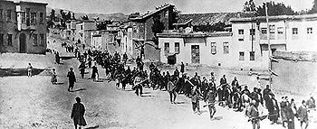

La deportazione è il trasferimento coattivo di un individuo o un gruppo di individui poi obbligati a risiedere in un luogo diverso dal proprio dove vi vengono condotti con la forza.
Si differenzia dal confino e dall'esilio principalmente perché in genere al trasferimento segue la restrizione in determinate aree o proprio la reclusione, mentre il confino è più propriamente solo l'obbligo di risiedere in una determinata località e l'esilio è il mero divieto di soggiornare nel territorio nazionale.
Un numero rilevante di trentini venne evacuato nel Regno d'Italia. L'evacuazione verso l'Italia avvenne principalmente in due momenti: dopo l'entrata in guerra del Regno il 24 maggio 1915 e dopo la Strafexpedition, la spedizione punitiva del 1916.
L'esodo di 35.515 profughi trentini colse impreparate le autorità italiane. Essi vennero dislocati in tutta Italia, anche al sud e nelle isole, e diverse famiglie vennero completamente smembrate.
757 furono i fuorusciti, cittadini austro-ungarici di nazionalità italiana, che, per evitare persecuzioni politiche, lasciarano il Trentino per l'Italia.
La valutazione dell'esodo trentino nel Regno d'Italia è assai divergente. Una parte della storiografia sottolinea che i trentini riuscirono nel complesso a inserirsi nelle comunità italiane cui erano stati destinati, aiutati dai sussidi governativi. Molti trovarono anche un lavoro. In questo modo l'esodo contribuì a rinforzare il legami con la nuova patria italiana.[6]
Altri[7] danno rilievo agli aspetti negativi dell'esodo. I profughi furono oggetto di attenzione da parte delle autorità governative italiane soprattutto in termini di controllo. I parenti di amministratori, di gendarmi e di soldati asburgici erano sottoposti a particolari controlli perché ritenuti capaci di dare vita ad una propaganda filo-austriaca. Lo stesso fatto di avere un cognome austriaco poteva essere considerato pericoloso e motivo d'internamento. I trentini considerati filo austriaci vennero deportati soprattutto nel Meridione d'Italia.
L'assistenza ai profughi venne in gran parte demandata alle amministrazioni locali. In generale, mentre le condizioni furono sensibilmente migliori nelle città del centro-nord dove i trentini riuscirono a trovare più possibilità di inserimento e occupazione, nelle regioni meridionali donne e bambini incontrarono maggiori disagi e la mortalità fu elevata, anche per l'imperversare di malattie.
La fine dell'internamento dei trentini in Italia fu dichiarata e comunicata, con una Circolare del Ministero dell'Interno, il 19 gennaio 1919, e l'effettivo rimpatrio degli internati trentini avvenne nell'agosto dello stesso anno.